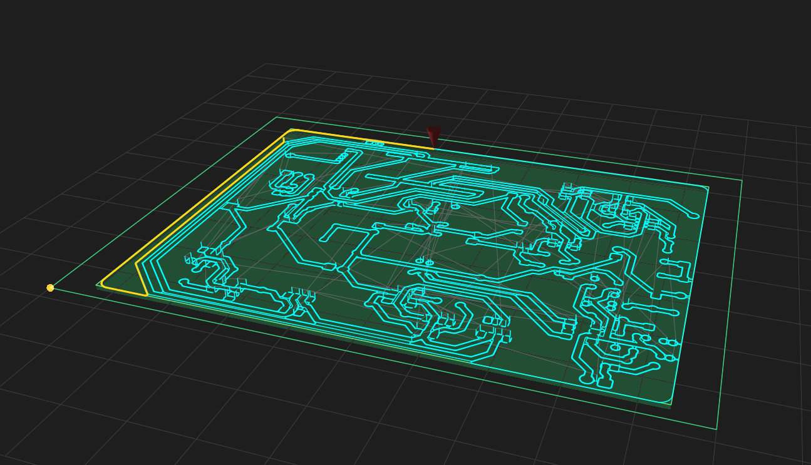
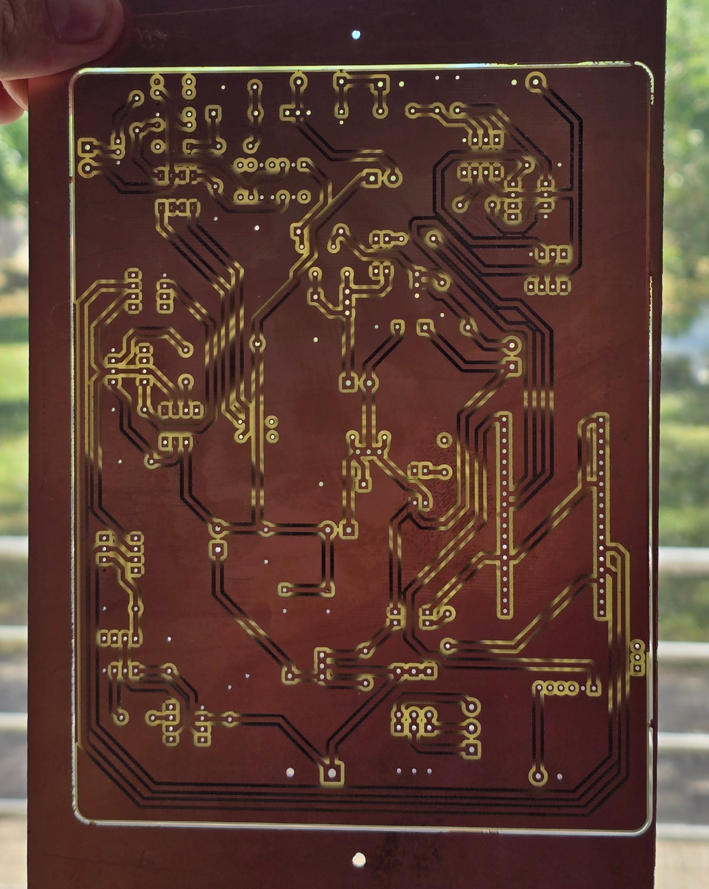
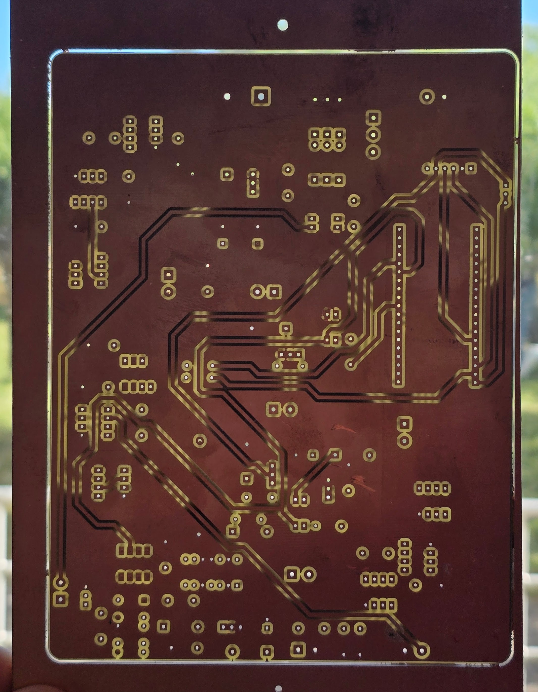

SRM-CAM
Desktop CAM for the Roland SRM-20: load KiCad Gerber + Excellon files, preview every toolpath, and export ready-to-run G-code — with bed leveling, double-sided registration, and photo-verified rework built in.

What it replaces
One tool for the whole SRM-20 PCB flow, replacing the mods website and FlatCAM. You bring KiCad plot output; SRM-CAM produces one job file per operation — trace isolation, drilling, and board cut-out — that you stream from Roland VPanel in NC-code mode.
Guide contents
Highlights
Trustworthy depth
FR-4 stock is never flat. SRM-CAM probes the copper surface electrically through a small Arduino fitted in the SRM-20, builds a height map, and warps every cutting move so the engrave depth follows the real surface — with drift-corrected, double-verified touches and a sanity check that flags suspicious mesh points before you cut.
Double-sided that registers
Two proven flip methods: dowel pins seated in fresh-drilled holes (sub-0.1 mm, zero measurement) or fiducial holes probed after the flip — including an Auto button that finds each hole center electrically to ~50 µm without any jogging by eye.

See problems before they're problems
Isolation preflight marks channels the bit physically cannot cut. The 3D simulator plays back the whole job. And after cutting, a photo of the board can be warped onto the design to detect under-cut channels automatically — trained on real production ground truth.

A finished board
Both sides of a double-sided board milled with SRM-CAM, registered off dowel pins, held to the light:

